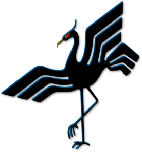

Restaurang
Tranan
En klassisk måltid med utsökta hemmagjorda köttbullar serveras tillsammans med egenpressat mos av högsta kvalité.
Husets egen specialare med egenfångade räkor inuti en nybakad baguett gjort på egenmalt mjöl.
Två rejäla bitar lax grillade över djävulens eld serveras tillsammans med en nypa gröna grönsaker.